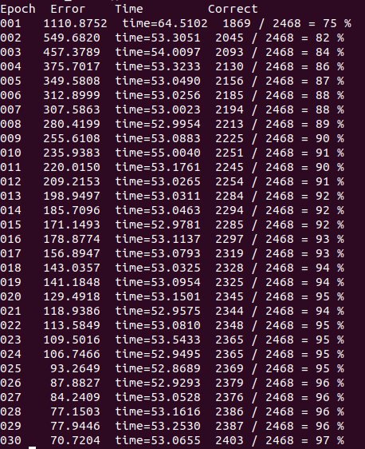

15-694 Cognitive Robotics Final Project
Partial Cube Detection
Instructor: Professor Dave Touretzky
[Course WebPage] [Project Instructions]1. Introduction
This page is about my final project from 15-694: Cognitive Robotics course at Carnegie Mellon University Computer Science Department that I took in Spring 2020 semester. The main goal of the project is to give the Cozmo robot an ability to detect the partial cube in his vision by using a deep learning, then turn to its direction so that Cozmo can see the full cube in its vision.
2. Robot and Software
At this project, I have used the Cozmo. Details of 'How does the Cozmo work?' can be found at here. Base code that operates the Cozmo for this project and this course can be found at here.
I use the OpenCV when I handle images
For the training and testing the partial cube detection, I used the PyTorch.
3. Data Collection
Even though the Professor Touretzky suggested collecting the image data by Cozmo's camera with his TakePictures.fsm code, I decided to collect the data by my smartphone (iPhone 7+) since placing Cozmo, checking his vision at computer, then taking picture requires much more labor and time than needed. However, data collected by Cozmo can be more exquisite, and more helpful for making better neural network. If time permits, I will try to collect the data by Cozmo, then compare the performance.
3.1 Training Data Images
All raw images, taken from the smart-phone, have 4032 pixels width, and 3024 pixels height. Thus, the aspect ratio of all raw images is 4 : 3.
These are some of my raw images with cubes.


These are some of my raw images with no cube.


3.2 Editing Raw Images to Cozmo's perspective
As I mentioned above, these images are taken by smart-phone camera instead of the Cozmo's camera. At testing, images directly taken from the Cozmo's camera will be an input image of the neural network. Thus, it is necessary to make our training images similar to image taken from the Cozmo.
This is how Cozmo sees the world with his camera. The width of the image is 320 pixels, and height of the image is 240 pixels. Thus, the aspect ratio is 4 : 3. Also, the image is in grayscale.

Fortunately, images from the Cozmo's camera has same aspect ratio as images from the smartphone. Thus, we only need to resize the image (divide both width and height with 12.6), then change RGB colors into grayscale.

3.3 Cropping and Fliping the training images
As introduced in Section 1, and Project Instruction, our final goal is 1) to make the Cozmo to find the partial cube, then 2) turn to the direction where partial cube exists (left or right) so that the Cozmo can see the full cube at the end. To achieve this, all images (320 width x 240 height) in the training set should be labled as left, right, or No Cube. However, we can simplify the problem by setting up one essential rule when collecting the data, and using the flip function in the OpenCV.
1. When collecting the data (taking a picture), always locate partial/full cube at right half side.
2. After editing process (Section 3.2), cut each image (320 width x 240 height) data into half (two 160 width x 240 height). Then left half of the image will be an 160 x 240 image with no cube, and right half of the image will be an 160 x 240 iamge with partial/full cube.
3. Double each image by flipping it horizontally.
4. Now, there are two 160x240 images with no cube. Lable these two images as "No cube exists (Class 0)". Also, there are two 160x240 images with partial/full cube. Lable these two images as "Cube exists (Class 1)"
So, now number of lables decreases from 3 (Left, Right, No Cube) to 2 (Cube exist, No Cube exist). This makes our neural network task easier (because neural network just needs to decide whether cube exists in the image or not, and don't have to care whether partial cube is at the left side or right side.
Instead of simplifying the problem, we will let the Cozmo to figure out whether partial cube is at left side or at right side. More details will be at later section with Cozmo.
In addition, when 320 width x 240 height image with no cube is provided, four 160 width x 240 height image datasets with 'No cube exists' lable will be generated.
4. Neural Networks
Now, I will set up the neural network, then keep optimize it to improve the accuracy. Before setting up the neural network, I have collected 307 training images with a cube, 310 training images without a cube, and 17 test images with a cube. All images go through processes at Section 3.3.
Thus, after this process,
1) 307 training images (320x240) with a cube are divided into 614 training images (160x240) with a cube (Class 1 Lable) and 614 training images (160x240) without a cube (Class 0 Lable)
2) 310 training images (320x240) without a cube are divided into 1240 training images (160x240) without a cube (Class 0 Lable)
3) 17 test images (320x240) with a cube are divided into 34 test images (160x240) with a cube (Class 1 Lable) and 34 test images (160x240) without a cube (Class 0 Lable). Some examples of these images can be found at Section 3.1.
4.0 Suggested Network
At this section, I have only used dataset 1) and 3) since dataset 1) provides equal number of Class 1 and Class 0 image data.
As a starting point, I decided to use the neural network that Professor Touretzkey suggested [CubeDetector1]. Here is a details of the network.
I have used 30 epochs, Cross Entropy Loss as a criterion, and Stochastic gradient descent (SGD) as a optimizer. And this is a training result.
At last epoch, the network shows ~95% accuracy on its training image set.
This is a testing result, and analysis.
From the analysis chart above, we can see that there is high percentage (38.23%) of the false positive. In other words, our neural network cannot distinguish background in Class 0 image and the partial cube. To reduce false positive rate, and improve test accuracy, I will try 3 methods.
1) Add more Class 0 images (without cube), then induce the neural network to distinguish black cubes to backgrounds better. Dataset 2) in Section 4 will be used as extra class 0 images. (Section 4.1)
2) Try more deeper and sophisticated neural networks to relieve the overfitting problem.
3) Add more Class 1 images (with cube), then builds a stronger neural network.
4.1 Suggested Network + Extra Class 0 (without cube) images
At this section, I used both 1) and 2) datasets for training the neural network. Thus, there are 614 Class 1 Label (with a cube) and 1854 (614+1240) Class 0 Label (without a cube). Other conditions are same. Still used 30 epochs, Cross Entropy Loss as a criterion, and Stochastic gradient descent (SGD) as a optimizer. And this is a training result.

At last epoch, the network shows ~97% accuracy on its training image set.
This is a testing result
According to the testing result, its accuracy (~61%) is worse than that of Section 4.0. It not only fails to reduce the false positive, but also makes the false negative worse. Thus, it has been concluded that training with extra Class 0 (without cube) images does not improve the testing result. Also, since the training accuracy slightly improves (95% -> 97%), it is possible that adding extra Class 0 images exacerbates overfitting problem.
4.2 Deeper Convolutional Neural Network (CNN)
Reference
Updated at April 2020